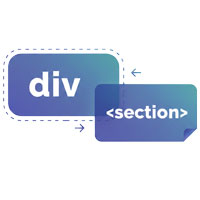

コンテンツを区切るタグ

- プロンプト例
HTMLのコンテンツを区切る役割の要素を解説して
HTMLでコンテンツを区切る役割を持つ要素は、主に「文書構造を整理し、意味を持たせる」ために使われます。
① 大枠を区切る「セクショニング要素（意味的要素）」
HTML5から導入された、意味を持って文書構造を分割する要素です。
| 要素 | 役割 |
|---|---|
| <header> | ページやセクションのヘッダー |
| <nav> | ナビゲーションリンクの集まり |
| <main> | ページの主要コンテンツ |
| <section> | 意味的な区切り（章・話題単位） |
| <article> | 独立した完結コンテンツ |
| <aside> | 補足情報・サイドバー |
| <ooter> | フッター（著作権、関連情報など） |
<main> <article> <header> <h1>記事タイトル</h1> </header> <section> <h2>概要</h2> <p>ここに説明文</p> </section> <footer> <p>投稿日：2026年2月14日</p> </footer> </article> </main>
👉 SEO・アクセシビリティに重要で、意味を正しく伝えるために積極的に使うべき要素です。
② 汎用的に区切る「div」
<div>
- 「div」は、「division（ディビジョン）」の略
- 文書構造としての特別な意味はなく、要素をグループ化する際に使用します
- CSSやJSでのレイアウト制御用に使用（特にレイアウト用のグループ化に利用される）
- レイアウト用のタグとしては、最も使用頻度の高いタグです
<div class="container"> <div class="card">...</div> </div>
👉 意味が不要な場合のみ使用
→ 可能な限り semantic HTML（header, section, article など）を優先
③ テキスト内を区切る「インライン要素」
| 要素 | 役割 |
|---|---|
| <span> | 意味を持たないインライン区切り |
| <strong> | 強調（重要） |
| <em> | 強調（アクセント） |
| <mark> | ハイライト |
| <br> | 改行 |
<p>これは <span class="red">重要</span> な文章です。</p>
④ 区切り線としての要素
<hr>
- 話題の区切り線
<p>前の話題</p> <hr> <p>次の話題</p>
👉 デザイン目的ではなく「意味的な区切り」として使用
⑤ セクショニング要素の使い分け
| 目的 | 推奨要素 |
|---|---|
| ページ全体 | <main> |
| 独立記事 | <article> |
| 章・話題単位 | <section> |
| ナビ | <nav> |
| 補足 | <aside> |
| レイアウトのみ | <div> |
| インライン装飾 | <span> |
section
- コンテンツを区切るsectionタグ：「章・節・項」などひとまとまりを示す
- h2タグを含むことが推奨されています
<section> <h2>タイトル</h2> <p>テキストが入ります。</p> </section> <section> <h2>タイトル</h2> <p>テキストが入ります。</p> </section>
article
- サイト内で自己完結した、独立しているコンテンツの要素に対して使用します
- articleには「記事・論説」という意味があります
< article > <h2>タイトル</h2> <p>テキストが入ります。</p> </article > < article > <h2>タイトル</h2> <p>テキストが入ります。</p> </article >
⑥ 初心者がよく迷うポイント
section と article の違いは？
| section | article |
|---|---|
| 話題単位 | 独立して成立 |
| ページ内の章 | 単体で配信可能 |
目安：単体でRSS配信できるなら article
⑦ 正しい構造のイメージ
body └─ main ├─ header ├─ section │ └─ article ├─ aside └─ footer